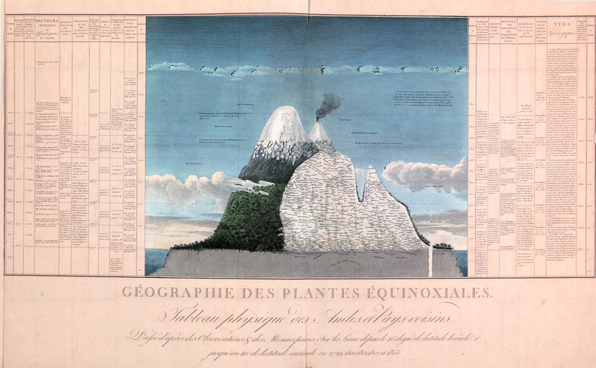

0 HUMBOLDT 1802 - ODER DIE WOHL ERSTE INFOGRAFIK
Vor rund 250 Jahren beschrieb der deutsche universalgelehrte Alexander von Humboldt ein für die damalige Zeit völlig neues Naturverständnis. Während seiner fünf jährigen Expedition auf dem nord- und südamerikanischen Kontinent (1799 - 1804) notierte er in seinem Tagebuch: "Die Welt ist wie ein Organismus, in dem alles miteinander verbunden ist". Humboldt war der Erste, der einen vom Menschen verursachten Klimawandel thematisierte und seine Beobachtungen sind heute so aktuell wie vor zwei Jahrhunderten. Auf seinen Reisen sammelte er Unmengen an Pflanzen und wissenschaftlichen Daten, welche er 1807 auf eindrückliche Weise im sogenannten "Naturgemälde" systematisch abbildete. Heute als erste Infografik bezeichnet zeigt die Abbildung einen idealisierten Querschnitt durch die Anden mit allen dort gefundenen Pflanzen und die miteinander verknüpften Messergebnisse (vgl. National Geographic, deutsche Ausgabe Juli 2019).
In meiner Bachelorarbeit befasste ich mich näher mit verschiedenen Aspekten von Falschnachrichten und wie Schweizer Medienhäuser damit umgehen. Die Veröffentlichungen von Humboldt wurden weder damals noch heute als Fake News bezeichnet. Doch während damaliger Wissenschaftler alles einzuordnen und zu klassifizieren versuchten, war Humboldts Vorstellung die Welt als lebendigen Mechanismus zu sehen, in dem alles miteinander verbunden ist, nicht bei allen gern gesehen. Damals wie heute werden Beobachtungen so ausgewertet, dass sie dem aktuellen Zeitgeist entsprechen. Dass Datensätze falsch interpretiert und publiziert werden muss dabei auch gar nicht absichtlich geschehen.
Ich lade Sie dazu ein mit untenstehenden Infografiken zu spielen. Schnell entsteht ein ganz anderes Bild, wenn man beispielsweise nur einen Kontinent anstatt der ganzen Welt mit einbezieht, oder wenn man sich auf der Zeitachse auf das letzte Jahrzehnt beschränkt anstatt mehrerer Jahrhunderte abbildet. Die Infografiken habe ich basierend auf öffentlich verfügbaren Datensätzen zur Plastikverschmutzung und Klimawandel erstellt und mit der JavaScript Bibliothek p5.js so aufbereitet, dass der Benutzer die Darstellungsform interaktiv manipulieren kann. Viel Spass!
1 PLASTIC, PLASTIC, PLASTIC - MANIPULATION DER Y-ACHSE
Wie viel Plastik und Abfall produzieren wir?
Waren es 1950 noch «lediglich» weltweit 2 Millionen Tonnen/Jahr, ist die jährliche Produktion 2015 mit 381 Millionen Tonnen/Jahr bereits um das fast 200-fache gestiegen. Dies entspricht etwa der Masse von 2/3 der Weltbevölkerung. Zwischen 1950 – 2015 hat die kumulative Produktion 7.8 Billionen Tonnen Plastik erreicht, mehr als eine Tonne pro lebende Person.
Instruktionen: Bearbeiten Sie mit den Slidern jeweils die Skalen der Y-Achse und/oder der X-Achse. Die Aussagen der dargelegten Informationen ändern sich konstant.